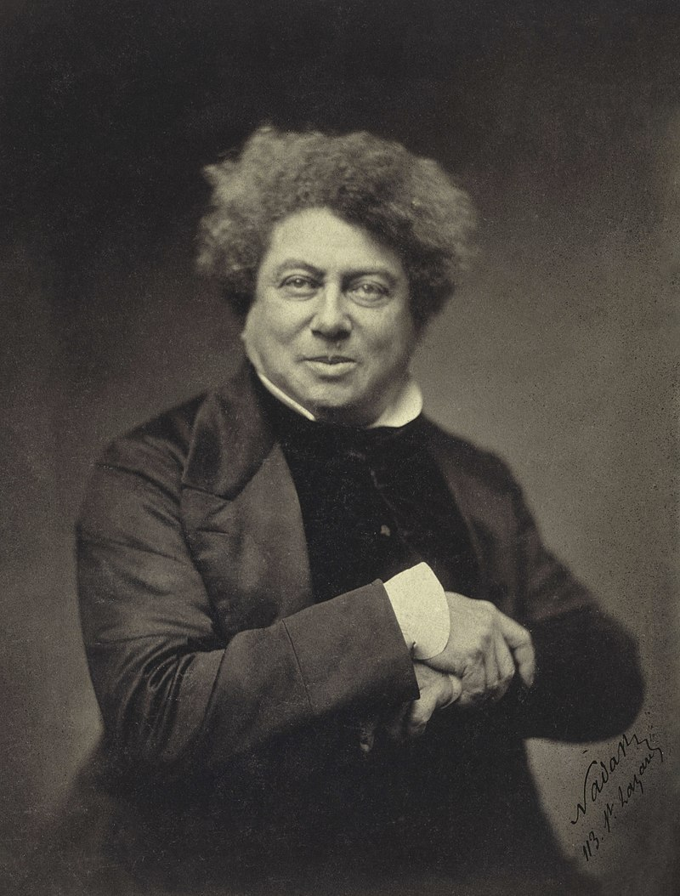

Александр Дюма

Александр Дюма (отец) родился в маленьком городке Виллер-Котре, расположенном близ Парижа. Отец будущего писателя был генералом, сражавшимся в рядах республиканской армии; дед писателя, маркиз Дави де Ля Пайетри, был богатым колониальным помещиком, женившимся на своей рабыне-негритянке.
Генерал Дюма, будучи убежденным республиканцем, впал в немилость при Наполеоне и вышел в отставку. Он умер в 1806 году, не оставив семье достаточных средств для существования.
Проучившись несколько лет в местной школе юный Дюма начинает трудовую жизнь в качестве писца у нотариуса в Виллер-Котре. В 1822 году Дюма переселяется в Париж, где при содействии друзей отца ему удается получить скромную должность в канцелярии герцога Орлеанского.
После трех лет упорного труда и усиленного чтения Дюма начинает свой писательский путь небольшим сборником рассказов "Современные новеллы" (1825), не отличающимся особыми литературными достоинствами.
Успех к Дюма приходит в 1829 году, когда ему удалось поставить на сцене театра "Одеон" свою первую романтическую драму - "Генрих III и его двор". Пьеса обличала кровавые преступления французского королевского двора XVI века; по своей идейной направленности была антимонархической и антиклерикальной, что вполне соответствовало предреволюционным настроениям французов.
Июльская революция 1830 года увлекает Дюма. Он примыкает к оппозиции, протестуя против реакционного режима Луи-Филиппа.
В 1836 году во Франции начинают выходить общедоступные газеты. Для привлечения широкого круга читателей газеты печатают небольшими отрывками-"фельетонами" занимательные романы. В газете "Пресса" публикует свои романы и критические статьи Александр Дюма.
В 1830-х годах Дюма начинает работу над циклом романов, которые должны были отразить огромный период исторического развития Франции - от Карла VII (1422-1461) до середины XIX века. Первым произведением этого цикла стал роман "Изабелла Баварская", источником для которого послужило исследование Баранта "История герцогов Бургундских". Следующий роман - "Асканио" (1840) - представляет читателю двор французского короля Франциска I. Герой романа - знаменитый ваятель итальянского Возрождения Бенвенуто Челлини.
В это же время Дюма проявляет интерес к России и пишет исторический роман "Записки учителя фехтования, или Восемнадцать месяцев в Санкт-Петербурге" (1840), посвященный жизни декабристов И. В. Анненкова и его супруги П. Е. Анненковой. Проникнутые чувством сострадания к жертвам царского произвола, "Записки" были запрещены царской цензурой к публикации в России и впервые были напечатаны в русском переводе лишь в 1925 году.
В жанре романа-фельетона Дюма становится популярным и признанным писателем, создавая в 1840-х годах свои наиболее известные произведения: "Три мушкетера" (1844) с двумя продолжениями - "Двадцать лет спустя" (1845) и "Виконт де Бражелон, или Десять лет спустя" (1848-1850), "Граф Монте-Кристо" (1844-1845), "Королева Марго", "Шевалье де Мезон-Руж" (1846), "Мадам де Монсоро" (1846), "Две Дианы" (1846), "Сорок пять" (1848).
В 1850-е годы Дюма отходит от своих былых романтических позиций и пишет ряд исторических романов, среди которых: "Исаак Лакедем" (1852), "Анж Питу" (1853), "Графиня де Шарки" (1853-1855), "Парижские могикане" (1854-1858).
Биографы и исследователи творчества Дюма пишут об огромном трудолюбии писателя, его умении работать при любых условиях. "Дюма чрезвычайно гордился быстротой своей работы, - отмечает французский литературовед д'Альмера, - да и имел на то право. И вместе с тем у него совсем не было обычного прилежания, регулярности в работе, свойственной тем чиновникам от литературы, которые каждый день выполняют свою положенную задачу. Бывало так, что он по целым дням не прикасался к перу, а затем, подгоняемый необходимостью, стремясь возместить потерянное время, писал по двенадцати или по пятнадцати часов подряд и даже больше. В одном жилете, летом и зимой, утром и вечером, потный, задыхающийся, дымящий, как вулкан во время извержения, он работал ночь и день на краешке стола, среди шума, без конца прерываемый гостями, никогда не отказывая им в приеме, разговаривая с ними, а затем, когда они уходили, снова принимаясь за начатую страницу, сцену пьесы или главу романа". Некоторые произведения, напечатанные за подписью Александра Дюма, создавались романистом совместно с другими литераторами Франции.
Революция 1848 года по-разному вовлекла в круговорот политических событий многих известных писателей Франции. Дюма выставляет свою кандидатуру в депутаты Национального собрания, но проигрывает выборы.
В 1858-1859 годы Дюма совершает путешествие по России. Пребывание французского писателя в Петербурге вызвало большой интерес российских обывателей. "Весь Петербург в течение июня месяца только и занимался господином Дюма. - писал И. Панаев в "Современнике" (1858). - О нем ходили различные толки и анекдоты во всех слоях петербургского общества: ни один разговор не обходился без его имени, его отыскивали на всех гуляньях, на всех публичных сборищах, за него принимали бог знает каких господ. Стоило шутя крикнуть: "Вон Дюма!" - и толпа начинала волноваться и бросалась в ту сторону, на которую вы указывали. Словом, господин Дюма был львом настоящей минуты". Это путешествие по России Дюма описал в семи томах своих книг "В России" и "Кавказ".
Значительным событием в жизни Дюма стало его знакомство с Гарибальди - героем национально-освободительного движения в Италии, боровшимся против австрийского господства. Дюма сопровождал Гарибальди в его героическом походе в Сицилию (1860) и после свержения неаполитанского короля был некоторое время директором национальных музеев в Неаполе.
В 1866 году, во время войны между Пруссией и Австрией, Дюма становится корреспондентом и шлет с фронта в парижские газеты обзоры военных действий.
Все биографы отмечают, что последние годы жизни писатель провел в крайней бедности. От нищеты его спасали дети - дочь-писательница и сын Александр Дюма, известный драматург.
Александр Дюма умер в городке Пюи 6 декабря 1870 года. Смерть его прошла незамеченной, так как совпала с поражением Франции в войне с Пруссией и оккупацией французской территории немецкими войсками.